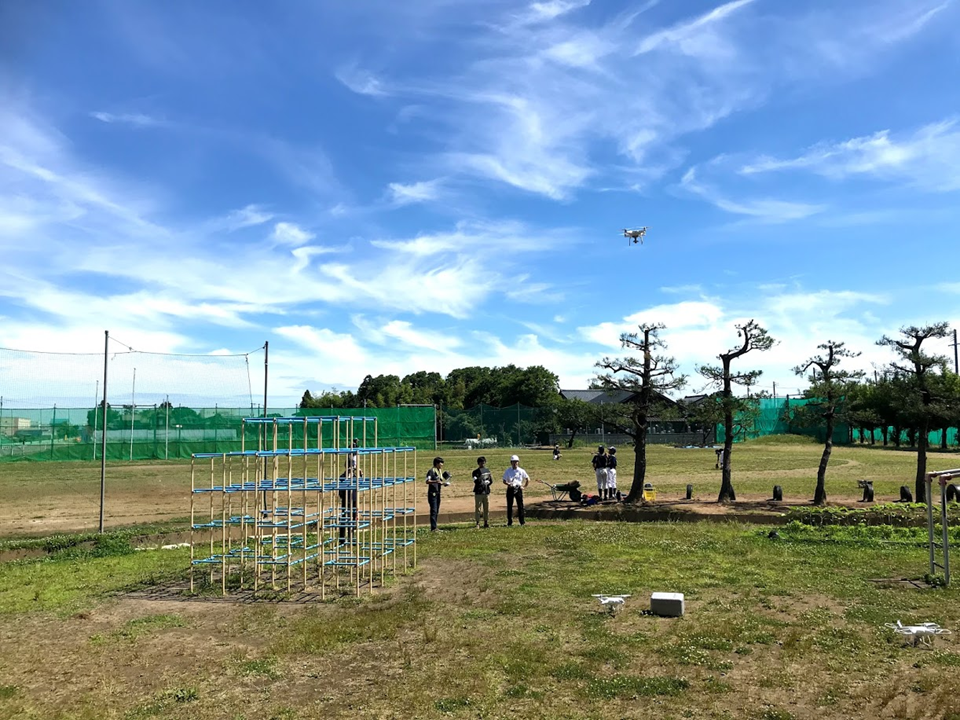
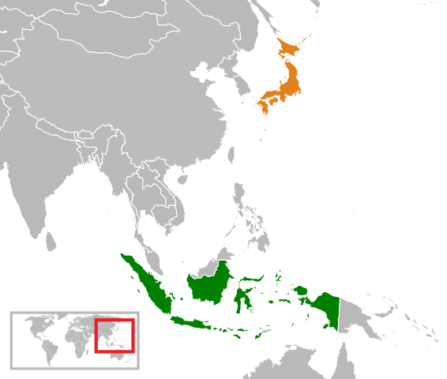
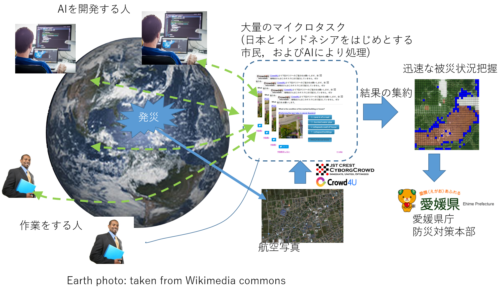
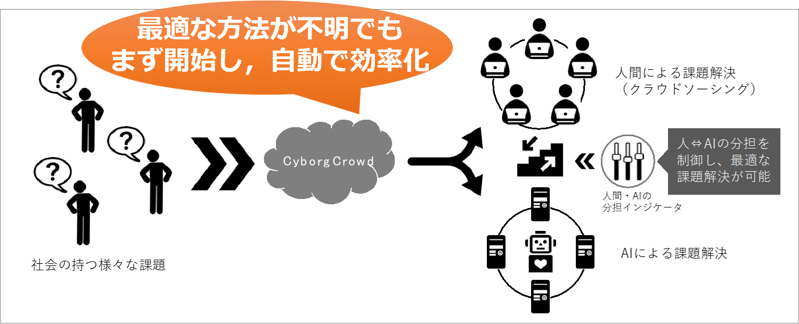
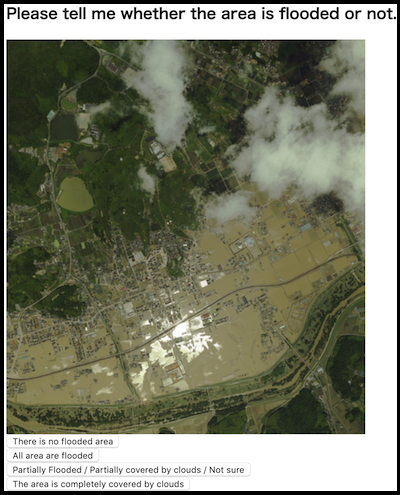
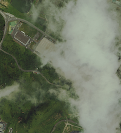
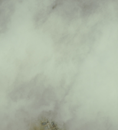
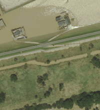
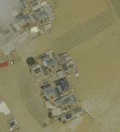

2019年9月XXX日開催
Date: Sept. 20th
世界初の国際サイバー防災訓練
〜国境を越えて人とAIは災害対応に協力できるか〜

[I want to perform tasks now. すぐにタスクを行ないたい方はこちら]
The team consisting of Ehime Prefecture (Japan), Banda Aceh city (Indonesia), Syiah Kuala University, JST CREST
CyborgCrowd Project (University of Tsukuba,Toyama Univerisy, Kyoto University, Niigata University, etc.) will
hold an international cyber natural disaster response drill at 9AM on 20th of September, the world's first
systematic attempt to aggreate the power of citizens from the world and artificial intelligence, in order to
understand the situation of a natural disaster that occurs somewhere on the earth.
令和元年9月20日（金）9時より，世界初の総力型「国際サイバー防災訓練」を，「愛媛県」「インドネシア・バンダ・アチェ市」「Syiah Kuala University」「「筑波大・富山大・京大等によるCREST
CyborgCrowdプロジェクト」(「産総研」)が共同で実施します．
Currently, large-scale natural disasters occur frequently over the world, causing damage to thousands and tens
of thousands of people. When such a large-scale natural disaster occurs, it is necessary for the national and
local governments to investigate and summarize the damage situation, but it is not easy to grasp the whole
picture. In disaster-stricken areas, in addition to lifesaving emergency activities, support for evacuation and
various victims are being promoted, and many volunteers are also involved. However, we believe that it is
possible to support the disaster area from a distance. The form of support may be a work that you can do little
by little, or there may be someone who can provide specialized work done with AI development.
現在，世界レベルで大規模自然災害が多発し，数千名，数万人規模での被害が出ています．このような大規模自然災害の発生時には，国や自治体では被害状況の調査・とりまとめを進める必要がありますが，全容の把握は容易ではありません。被災地では、救命救急活動に加えて、避難生活支援、各種の被災者支援が進められており、多くのボランティアも入っている状況です。しかし、遠隔からも被災地への支援は可能であると考えています。支援の形態は，皆さんが少しずつできる作業であっても良いし，AI開発と行った専門的な作業が提供できる人もいるかもしれません．
Both Ehime Prefecture and Banda Aceh County have suffered from large-scale disasters. There is a past in which
it was difficult to identify the affected area due to a wide-area disaster, and we could not fully grasp the
situation while we could not grasp the situation. In this training, we will analyze the aerial photographs of
the West Japan flood
Combining participants from multiple countries centering on both people with crowdsourcing technology and the
power of AI developed by the general public, conduct training to quickly grasp the situation of the disaster by
bringing together the power of the world's citizens and AI. I will do it. Specifically, we will examine how
flood conditions are judged on the web from satellite images and aerial photographs, and the results are
aggregated and returned to the disaster area as a disaster situation. This is a new way to consolidate your
power in the stricken area in modern society.
愛媛県とバンダ・アチェ郡は，共に広域な大規模災害に苦しんだ経験を持ちます．広域災害が故に被災場所の同定が困難であるとともに、状況が把握できない中で、対応力を十分に発揮できなかった過去があります。本訓練では，西日本大水害の航空写真の分析を，
クラウドソーシング技術による両国民を中心とした複数国からの参加者と，一般の人により開発されたAIの力を組み合わせ，世界の国民とAIの総力を結集した迅速な災害状況把握の実施訓練を行ないます．具体的には，衛星画像や航空写真から浸水状況をウェブ上で判定し、その結果を集約し、被災状況として被災地に返すことを取り上げます．これは、現代社会で皆様の力を被災地に集約できる新しい形です。
In the future, we aim to break through the “72-hour barrier” where the survival rate is extremely lowered by
utilizing these technologies. By using ICT and AI technology, it is becoming possible to respond to natural
disasters where citizens from all over the world collaborate remotely across borders. In this disaster drill, we
will examine the applicability of this new type of natural disaster response that was impossible before.
将来的には，これらの技術を活用し生存率が極端に下がる「72時間の壁」を突破することを目指します．ICTやAI技術を利用することにより，国境を越えて世界中の国民が遠隔で協力し合う自然災害対応が可能になりつつあります．本防災訓練では，このような，以前は不可能であった新しい形の自然災害対応に関して，防災訓練を通じて適用可能性を検証します．
愛媛県とバンダアチェ郡

(Photo: Taken from Wikimedia Commons)
Both Banda Aceh and Ehime Prefecture share the experience of suffering from natural disasters.
バンダアチェと愛媛県は共に自然災害に苦しんだという経験を共有しています．
- 倉敷に行ったときの写真？
http://gcfsvr.sus.u-toyama.ac.jp:8080/share.cgi?ssid=00pP4SF
- バンダアチェの写真 (メールで聞く)
訓練概要

- On September 20 (Fri), the drill will be conducted on the assumption that heavy rains occurred in western
Japan and large-scale floods occurred.
- Aircraft images are taken to understand the disaster situation (images of the 2018 Great West Japan Floods
are used in the training). The captured images are sent to the server to start a quick situational work with
the cooperation of people around the world and AI.
- The server that receives the image generates a number of tasks (small tasks) for grasping the situation
based on the acquired image and distributes them to the world. The distributed work is processed by people
and AI around the world. The AI used here was also developed with the cooperation of citizens (by
crowdsourcing).
- The latest situation is always provided in Ehime Prefecture and Banda Aceh District regarding the situation
of grasping the situation by working with citizens and AI. In Ehime Prefecture and Banda Aceh District, the
verification of this technology and considerations for the future will be discussed.
- 9月X日（X）未明，西日本全域において豪雨が発生し，大規模な水害が発生したという想定で，訓練が行われます．
- 災害状況把握のため，航空機による撮影が行われます (訓練では，2018年西日本大水害の画像が利用されます)
．撮影された画像は，世界中の人々とAIの協力によって迅速な状況把握の作業を開始するために，サーバに送信されます．
- 画像を受け取ったサーバでは，入手した画像を元に，状況把握を行うための多数のタスク(小さな作業)を生成し，世界に向けて配信します．配信された作業は，世界中の人々およびAIによって処理が行われます．ここで利用されるAIも，市民の協力によって(クラウドソーシングによって)開発されたものです．
- 市民とAIによる作業により状況把握の作業状況に関しては，愛媛県およびバンダアチェ郡において常に最新の状況が提供されます．愛媛県およびバンダアチェ郡において，本技術の検証および今後に向けての検討事項などが議論されます．
Participating organization 参画機関
- 愛媛県
- インドネシア バンダアチェ郡
- Syiah Kuala University
- JST-CREST CyborgCrowdプロジェクト※
- 産総研
※ 筑波大学、富山大学、京都大学、新潟大学，CNRS（仏国）が参加。ヤフー、国土地理院が協力。
本実証実験は、主としてJST-CREST「人間と調和した創造的協働を実現する知的情報処理システムの構築」領域（研究統括：萩田 紀博）の助成を受けて実施いたします。

被災状況判定タスク
◆タスクの例
◆Example of task

- In the task, you will see a picture of a part of the disaster area and judge the situation.
- There are four options: “There is no flooded area”, “All area is flooded”, “Partially Flooded / Partially
covered by clouds / Not sure”, “The area is completely covered by clouds”.
- Please select an option other than “Partially Flooded / Partially
covered by clouds / Not sure” only when all of the images apply to
it. For example, select "The area is completely covered by clouds" only if the image is completely covered
by clouds.
- If part of the image is cloud or part of it is flooded, select “Partially Flooded / Partially
covered by clouds / Not sure”.
- 
- For example, the image above may appear to be not flooded,
but there are a mixture of clouds
and
non-flooded areas.
In this case, select "Partially Flooded / Partially
covered by clouds / Not sure" and do not select "There is no flooded area".
- 
- Only when the image is displayed like abobe, select "Partiallycovered by clouds"
- 
- Similarly, the above image has a mixture of flooded and non-flooded areas. In this case select "Partially
Flooded / Partially
covered by clouds / Not sure".
- 
- Only when the image is displayed like abobe, select "All area is flooded"
- タスクでは，被災地の一部の写真を見て，その状況を4つの選択肢を用いて判定していただきます．
- 選択肢には，「浸水している場所はない」「全て浸水している」「一部浸水している/一部雲に隠れている/自信が無い」「全部雲に隠れて見えない」の4つがあります．
- このうち，「一部浸水している/一部雲に隠れている/自信がない」以外の選択肢は，画像の全ての領域がそれに当てはまっている場合のみに選択してください．例えば，「全部雲に隠れて見えない」を選択するのは，画像が全てに雲で覆われている場合にのみ，選択してください．
- 画像の一部が雲であったり，一部が浸水している場合には，「一部浸水している/一部雲に隠れている/自信が無い」を選択してください．
- 例えば上のような画像は,一見浸水していないように見えますが,雲と浸水していない場所が混在しています.このような場合には「一部浸水している/一部雲に隠れている/自信が無い」を選択し,「浸水している場所はない」を選択しないようにしてください.
- 上のような画像になって初めて,「全部雲に隠れて見えない」を選択してください.
- 上のような画像も同様に,浸水している場所と浸水していない場所が混在しています.このような場合には「一部浸水している/一部雲に隠れている/自信が無い」を選択します.
- 上のような画像になって初めて,「全て浸水している」を選択してください.
タスクを実施するには，下記のボタンをクリックして行ってください
MIND Project Members (* who implemented the drill system)
MINDプロジェクトメンバ (2019.8.11現在，50音順)(*本防災訓練システムを実装)
- 井ノ口宗成 (富山大学) 専門：自然災害対応とIT
- * 鵜尾 厚佑 (筑波大学情報学群) クラウドソーシングとAIの研究に従事
- 北原格 (筑波大学) 専門：コンピュータビジョン
- 小林洸陽(筑波大学大学院博士前期課程) コンピュータビジョンの研究に従事
- *小林正樹(筑波大学大学院博士後期課程) クラウドソーシングとAIの研究に従事
- 宍戸英彦(筑波大学) 専門：コンピュータビジョン
- 田島敬史(京都大学) 専門：データベースシステム，データ工学
- 田村圭子(新潟大学) 専門：自然災害対応
- 鳥屋剛毅(筑波大学大学院博士後期課程) コンピュータビジョンに研究に従事
- Flavia Fulco(東北大学) 専門：自然災害復興と文化
- 松原正樹(筑波大学) 専門：認知科学，ヒューマンマシンインタラクション
- 森嶋厚行(筑波大学) 専門：クラウドソーシング・ヒューマンコンピュテーションシステム
今回のシステム開発に当たっては上記の他に，Crowd4U開発運用チームの協力を得ています．
また，産総研 野田五十樹 様のアドバイスを得ております．
We look forward to feedback from participants. 参加者からのフィードバックをお待ちしています
Google Formへのリンクをつくる
(英語，日本語，インドネシア語)